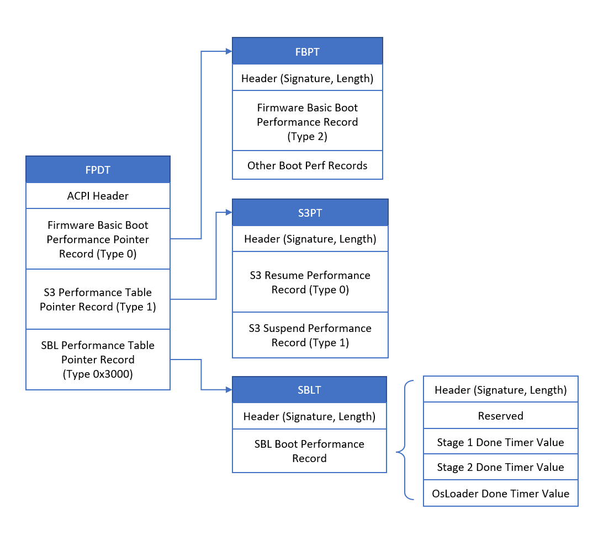

Boot Performance
SBL aims to boot very quickly. This is mandatory, for some use cases, e.g., turning on rear-view camera system when a car is started.
Boot performance is designed in every stage of SBL. There are some trade-offs to be considered when one optimizes the boot time.
Type of boot media (e.g., fast boot media such as eMMC)
Security features (signing or hashing algorithms, use of hardware acceleration)
Hardware configuration (processor frequency, memory size, device configuration etc)
Image size with compression algorithm (e.g. Lz4)
Generic features (e.g. splash screen, number of boot options)
Measuring Boot Performance
SBL measures boot performance throughout the execution of the bootloader. Measurements are obtained by capturing timestamp values
during the execution of the bootloader. Each timestamp is associated with an ID that denotes some event in the boot flow. This data
is passed through a hand-off block (HOB) denoted by the GUID gLoaderPerformanceInfoGuid to the payload.
gLoaderPerformanceInfoGuid = { 0x868204be, 0x23d0, 0x4ff9, { 0xac, 0x34, 0xb9, 0x95, 0xac, 0x04, 0xb1, 0xb9 } }
This data can be viewed in the the OsLoader shell using the perf command. An example output is shown below –
Shell> perf
Loader Performance Info
=======================
Id | Time (ms) | Delta (ms) | Description
------+------------+------------+---------------------------
1000 | 2 ms | 2 ms | Reset vector
1010 | 9 ms | 7 ms | Stage1A entry point
1040 | 11 ms | 2 ms | Board PostTempRamInit hook
1060 | 16 ms | 5 ms | Stage1A continuation
1080 | 31 ms | 15 ms | Load Stage1B
10A0 | 82 ms | 51 ms | Verify Stage1B
10B0 | 84 ms | 2 ms | Decompress Stage1B
2000 | 84 ms | 0 ms | Stage1B entry point
2020 | 197 ms | 113 ms | Board PreMemoryInit hook
2030 | 229 ms | 32 ms | FSP MemoryInit
2040 | 266 ms | 37 ms | Board PostMemoryInit hook
2050 | 276 ms | 10 ms | Board PreTempRamExit hook
2060 | 281 ms | 5 ms | FSP TempRamExit
2070 | 281 ms | 0 ms | Board PostTempRamExit hook
2080 | 283 ms | 2 ms | Load Stage2
2090 | 285 ms | 2 ms | Copy Stage2 to memory
20A0 | 361 ms | 76 ms | Verify Stage2
20B0 | 364 ms | 3 ms | Decompress Stage2
20C0 | 364 ms | 0 ms | Extend Stage2 hash
20D0 | 365 ms | 1 ms | Rebase Stage2
3000 | 370 ms | 5 ms | Stage2 entry point
3010 | 466 ms | 96 ms | Board PreSiliconInit hook
3020 | 467 ms | 1 ms | Save NVS data
3030 | 490 ms | 23 ms | FSP SiliconInit
3040 | 492 ms | 2 ms | Board PostSiliconInit hook
3050 | 515 ms | 23 ms | Display splash
3060 | 520 ms | 5 ms | MP wake up
3080 | 524 ms | 4 ms | MP init run
3090 | 526 ms | 2 ms | Board PrePciEnumeration hook
30A0 | 536 ms | 10 ms | PCI enumeration
30B0 | 543 ms | 7 ms | Board PostPciEnumeration hook
30C0 | 545 ms | 2 ms | FSP PostPciEnumeration notify
30D0 | 561 ms | 16 ms | ACPI init
30E0 | 564 ms | 3 ms | Board PrePayloadLoading hook
3100 | 567 ms | 3 ms | Load payload
3110 | 568 ms | 1 ms | Locate payload
3120 | 577 ms | 9 ms | Copy payload to memory
3130 | 675 ms | 98 ms | Verify payload
3140 | 744 ms | 69 ms | Decompress payload
3150 | 744 ms | 0 ms | Extend payload hash
31A0 | 746 ms | 2 ms | Board PostPayloadLoading hook
31B0 | 749 ms | 3 ms | Decode payload format
31F0 | 749 ms | 0 ms | End of stage2
------+------------+------------+---------------------------
This performance data is also printed out to the debug port when OsLoader launches the operating system.
FPDT Entry
OsLoader obtains the performance data from the performance HOB and adds its own execution times to the data. OsLoader will also create and publish the SBL Performance ACPI Table (SBLT). This table is pointed to by the Firmware Performance Data Table (FPDT). Refer to ACPI Specification for more details on FPDT.
This image shows the FPDT structure after adding SBLT to the FPDT.
{kind=link}
The SBL Boot Performance data is saved using the following struct:
typedef struct {
EFI_ACPI_5_0_FPDT_PERFORMANCE_RECORD_HEADER Header;
UINT32 Reserved;
///
/// Time taken for Stage 1 execution in nanoseconds
///
UINT64 Stage1Time;
///
/// Time taken for Stage 2 execution in nanoseconds
///
UINT64 Stage2Time;
///
/// Time taken for OsLoader execution in nanoseconds
///
UINT64 OsLoaderTime;
} SBL_PERFORMANCE_RECORD;
The SBL Boot Performance Data can then be accessed via ACPI. It is denoted by the Signature SBLT.
SBLT @ 0x00000000452B88CC
0000: 53 42 4C 54 28 00 00 00 00 30 20 01 00 00 00 00 SBLT(....0 .....
0010: 83 04 00 00 00 00 00 00 B9 0A 00 00 00 00 00 00 ................
0020: 82 9E 00 00 00 00 00 00 ........